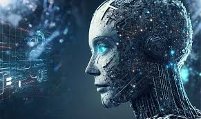
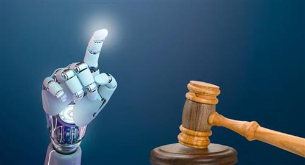
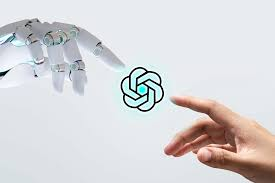
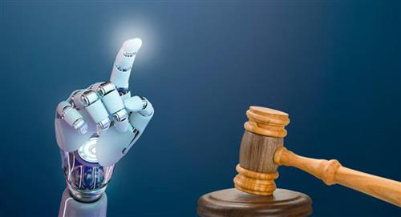
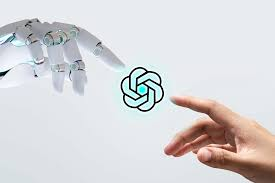

QUIEN MANDARA EN LA IA?
La pregunta que mas nos hacemos los apasionados en tecnologia y en el futuro, quien debe mandar en la inteligencia artificial?, la geopolitica y las relaciolnes diplomaticas, comerciales y pacificas en los paises potencia an ido decayendo, es por eso que varios de estos se an puesto en marcha en una gran guerra tecnologica, usando como medio la inteligencia artificial.
Las potencias sumergidas en este conflicto y en esta carrera tecnologica principalmente son china, estados unidos y paises europeos en conjunto, ya que con esta tecnologia a niveles muy avanzados pueden ayudar a desarrollar y predecir la economia de un pais, puede ayudar con estrategias militares, puede ser una guerra sin soldados, sino una guerra con drones o vehiculos, aviones que puedan tomar desiciones propias en base a su calculo, es por eso el interes en mejorar y desarrollar la mejor ia para cada pais dependiendo sus intereses.
Ante los riesgos y desafíos planteados por el rápido avance de la IA, los gobiernos han comenzado a intervenir con medidas regulatorias y políticas públicas. Desde la Unión Europea hasta China y Estados Unidos, se están implementando normativas para abordar cuestiones como la transparencia algorítmica, la responsabilidad legal y la equidad en el acceso a la tecnología. Sin embargo, el equilibrio entre la innovación y la protección puede ser delicado, y las regulaciones excesivamente restrictivas podrían frenar el progreso en lugar de fomentarlo.
EMPRENDIMIENTO Y SURGIMIENTO DE MEDIANAS EMPRESAS EN IA
Cuan dificil puede ser emprender o crear una empresa que se especialize en el area de la imteligencia artificial?, lo cierto es que el mercado esta abarrotado por las grandes empresas tecnologicas, mas avanzadas y estables, ademas que viene con una inversion de miles de millones de dolares.
El emprendimiento es este area se ve dificultada y obstaculizada por 3 razones principales, el dinero, conseguir socios, y el personal calificado
El dinero puede ser el primer obstaculo que se puede mencionar, ya que el desarrollo, mantenimiento, mano de obra, equipos, y areas de trabajo son fundamentales en una empresa, pero siempre dinero es lo que falta, es por eso que surge el segundo problema, los socioln o los inversores, el conseguir un inversionista ouede ser una tarea ardua y tediosa, ya que son pocas las personas o empresas que quieren arriesgarse con ujna nueva empresa, ademas de que muchos prefieren el producto que ya esta en el mercado de las grandes empresas, y es por eso que muchos consideran la tecnologia de las nuevas empresas como obsoleta u atrasada, y el tercero de la mano de obra es otro de los grandes problemas que se puede tener, ya que en una empresa nueva no se puede dar el lujo de pagar cuantosas cantidades de dinero a su personal, es por eso que la gente mas cualificada en estos areas prefiere trabajar en empresa grandes y seguras
MORALIDAD Y VALORES EN IA
Alguna ves nos hemos preguntado si es que la informacion que recibimos de alguna inteligencia artificial tiene sezgos o nos responde segun la empresa que lo maneja, el lugar donde esta establecida la empresa o la cultura de sus creadores?, esto puede ser mas normal de lo que parece.
La inteligencia artificial (IA) puede diseñarse para minimizar los sesgos, pero eliminarlos por completo es un desafío debido a que los sistemas de IA aprenden de datos que pueden contener sesgos humanos preexistentes. Los desarrolladores de IA están trabajando en marcos de desviación y enfoques técnicos para reducir los sesgos, como la revisión de datos y algoritmos, y el uso de técnicas de aprendizaje que promuevan respuestas imparciales. En cuanto a la moralidad y ética en la IA, es un campo que aborda cuestiones fundamentales sobre cómo los sistemas de IA deben comportarse y el impacto de sus decisiones en la sociedad. La ética de la IA se centra en principios como la transparencia, la justicia, la no discriminación y el respeto a los derechos humanos. Organizaciones como la UNESCO han establecido recomendaciones para guiar el desarrollo ético de la IA, asegurando que contribuya a un mundo más inclusivo, sostenible y pacífico. La moralidad en la IA también implica considerar a los agentes morales y pacientes morales, y cómo la IA puede reconocer aspectos moralmente relevantes en sus decisiones y acciones
Los sesgos en la IA pueden surgir de datos históricamente sesgados que reflejan desigualdades sociales, lo que puede resultar en daños a grupos históricamente marginados en casos de uso como contratación, vigilancia policial, calificación crediticia y muchos otros1. Para mitigar estos sesgos, se pueden establecer procesos responsables que incluyan el uso de herramientas técnicas y prácticas operativas como equipos internos de revisión o auditorías de terceros2. Además, se están explorando marcos de desviación y enfoques técnicos para reducir los sesgos, como la revisión de datos y algoritmos y el uso de técnicas de aprendizaje que promuevan respuestas imparciales
PUEDE LA IA INTERFERIR EN DESICIONES ELECTORES?
Sin duda este anio es muy importante en geopolitica, ay que este 2024 se llevaran a cabo mas de 50 elecciones en el mundo, y la pregunta es puede la inteligencia predecir, ymas aun interferir en las elecciones de estos paises, siendo estados unidos la nacion que podria enfrentar poir primera vez este dilema
La inteligencia artificial (IA) tiene el potencial de predecir resultados electorales analizando grandes cantidades de datos, patrones de votación históricos, popularidad de los candidatos, factores socioeconómicos y análisis de sentimientos en redes sociales1. Estudios recientes sugieren que modelos de lenguaje avanzados, como GPT-3, han demostrado ser capaces de simular opiniones y valores de votantes y alinear sus predicciones con resultados electorales reales2. Sin embargo, es importante tener en cuenta que, aunque la IA puede ofrecer predicciones, estas dependen de la calidad y la actualidad de los datos con los que se entrena. Además, la IA no puede capturar completamente la complejidad del comportamiento humano y los cambios impredecibles en las opiniones públicas. Por lo tanto, las predicciones de IA deben usarse con cautela y como una herramienta complementaria a otros métodos de análisis electoral.
Análisis de Datos y Predicción de Resultados: La IA puede procesar y analizar grandes cantidades de datos electorales, incluyendo patrones de votación históricos, encuestas y tendencias en redes sociales. Esto permite a los analistas políticos y a los partidos hacer predicciones más precisas sobre los resultados electorales y adaptar sus estrategias de campaña en consecuencia.
Segmentación y Publicidad Dirigida: Los algoritmos de IA pueden identificar segmentos específicos del electorado y personalizar los mensajes de campaña para dirigirse a estos grupos con mayor eficacia. Esto puede aumentar la relevancia de la publicidad política y potencialmente influir en las decisiones de voto.
Manipulación y Desinformación: La IA también puede ser utilizada para crear y difundir desinformación a través de las redes sociales, lo que puede confundir a los votantes y afectar sus percepciones de los candidatos o temas importantes. Los llamados “bots” de IA pueden amplificar mensajes falsos o engañosos, distorsionando el discurso público.
Seguridad y Protección de Datos: La IA puede ayudar a mejorar la seguridad de los sistemas electorales, detectando y respondiendo a amenazas cibernéticas en tiempo real. Sin embargo, también existe el riesgo de que la IA sea utilizada para comprometer la integridad de los datos electorales, lo que podría cuestionar la legitimidad de los resultados.
Participación y Compromiso Electoral: La IA puede facilitar la participación electoral al proporcionar a los votantes información personalizada y accesible sobre los candidatos y las cuestiones. Las plataformas de IA pueden ayudar a los votantes a registrarse, encontrar su lugar de votación y entender mejor las opciones disponibles.
Automatización del Proceso Electoral: La IA tiene el potencial de automatizar aspectos del proceso electoral, como el conteo de votos y la verificación de la identidad, lo que podría aumentar la eficiencia y reducir los errores humanos. Sin embargo, esto también plantea preocupaciones sobre la transparencia y la posibilidad de manipulación algorítmica.
Ética y Regulación: El uso de la IA en las elecciones plantea importantes cuestiones éticas y legales. Es crucial que existan regulaciones claras y éticas para guiar el uso de la IA en los procesos electorales, asegurando que se respeten los derechos de los votantes y se mantenga la integridad democrática.
INTELIGENCIA ARTIFICIAL EN CHINA
China no solo se ha subido al tren de la inteligencia artificial (IA); viaja cómodamente sentada en un vagón de primera clase. Esta disciplina tiene un rol estratégico para las grandes potencias, y el país liderado por Xi Jinping no es una excepción. Algunas de las sanciones que ha desplegado la Administración estadounidense persiguen poner fuera de su alcance los chips para IA más avanzados, como el A100 o el H100 de NVIDIA, pero China ya ha tomado cartas en el asunto. Jensen Huang, el fundador y director general de NVIDIA, lo dejó claro en una de las declaraciones que hizo a finales de mayo en Computex: "China está dedicando unos recursos masivos a la puesta en marcha de empresas emergentes especializadas en el desarrollo de GPU. No las subestiméis". Esta advertencia estaba dirigida al Gobierno de EEUU en un claro intento de prevenirle acerca de las consecuencia que tendrán las sanciones que persiguen frenar el desarrollo tecnológico de China. Con cambios que van desde el auge de las armas autónomas letales en la guerra hasta el inmenso dinamismo económico que están desencadenando herramientas como ChatGPT, el poder nacional se está transformando en la época de la inteligencia artificial (IA). Sin embargo, por formidables que hayan sido hasta ahora esos cambios, es casi seguro que todavía es demasiado pronto para saber con precisión cuáles serán los más significativos en relación con el poder, o incluso para imaginarlos con acierto. La historia señala que son necesarias décadas, cuando no generaciones, para que las tecnologías verdaderamente transformadoras remodelen los contornos del poder y para que se consolide un nuevo equilibrio en su dinámica.
A la luz del enorme potencial de las tecnologías de IA en los próximos años, EE.UU. y China están afanosamente enzarzados en una batalla por la supremacía. Los dirigentes empresariales y gubernamentales de ambos países han hecho grandes apuestas por esa tecnología como fuente principal de su potencia futura y están muy por delante de todos los demás países en cuanto a la fuerza de su sector de IA. Ahora bien, aunque la realidad de una pugna sino-estadounidense por la IA está clara (y aunque las dimensiones de esa lucha son evidentes), lo que resulta una incógnita en los próximos años será la forma probable en que se desarrollará dicha pugna. Al poco de asumir el cargo, el máximo dirigente chino Xi Jinping lamentó que los países occidentales hayan logrado dominar el mundo gracias a su uso de las tecnologías más avanzadas: “el arma afilada del Estado moderno”. En consecuencia, China se fijó en una declaración oficial del 2017 el objetivo de superar a EE.UU. como líder mundial en IA en el 2030. Del mismo modo, la Comisión de Seguridad Nacional sobre IA del Gobierno estadounidense señaló en el 2021 que la IA es “la herramienta más poderosa en generaciones” y abogó por una estrategia sólida para desbaratar los esfuerzos chinos por superar a EE.UU. A medida que la competencia geopolítica entre ambos países se intensifica (con el temor a una guerra por Taiwán en el horizonte), esa dinámica no hace sino acelerarse.
CODIGO ABIERTO
Open Source, Código Abierto o Software Libre son conceptos que podemos tomar como sinónimos aunque existen diferencias técnicas. Código Abierto es el software que cuenta con una licencia donde los usuarios podemos estudiar el código pero también modificarlo ya que tenemos el acceso al código fuente. En 1985, Stallman se basó en el Proyecto GNU al fundar la Free Software Foundation (FSF), una organización sin fines de lucro dedicada a promover el concepto de Software Libre, traducido del inglés: “Free Software”. Stallman también desarrollaría más tarde la Licencia Pública General de GNU, una licencia de software que garantiza los derechos de los usuarios finales para ejecutar, ver y compartir el código fuente libremente. Según la FSF y tal como lo mencionan en dzone, para que una pieza de software se considere verdaderamente "libre", su licencia debe garantizar cuatro libertades esenciales a sus usuarios: La libertad de ejecutar el programa como desee, para cualquier propósito. La libertad de estudiar cómo funciona el programa y cambiarlo para hacerlo como desee. El acceso al código fuente es una condición previa para esto. La libertad de redistribuir copias del software. La libertad de distribuir copias de sus versiones modificadas a otros. Al hacer esto, puede darle a toda la comunidad la oportunidad de beneficiarse de los cambios. El acceso al código fuente es una condición previa para esto. La FSF considera que cualquier software que no cumpla con cada uno de estos criterios no es libre. No todo el software de Código Abierto cumple al pie de la letra con estas definiciones. El software de Código Abierto tiene un significado cercano al Software Libre, aunque los dos términos no son idénticos. Ambas terminologías se refieren a un grupo similar de licencias y software, pero cada término alude a diferentes ideologías. La Open Source Initiative (OSI), la organización sin fines de lucro que apoya el desarrollo de software de Código Abierto, considera que el software debe cumplir con los siguientes criterios: Redistribución gratuita del software. El código fuente debe estar disponible públicamente. El software se puede modificar y distribuir en un formato diferente del software original. El software no debe discriminar a personas o grupos. El software no debe restringir el uso de otro software. Entonces podemos concluir que la gran diferencia entre Código Abierto y Software Libre es el punto 3 de los criterios de OSI: El software de Código Abierto se puede modificar y distribuir en un formato diferente del software original. Esto no lo permite el Software Libre. El Software Libre es mucho más restrictivo y menos atractivo para las empresas a diferencia del Código Abierto, pero ambas comparten un núcleo: se tiene acceso al código fuente. El hecho de que una determinada pieza de software sea gratuita o de código abierto depende de la licencia bajo la cual se distribuye y de si esa licencia está aprobada por la Open Source Initiative, la Free Software Foundation o ambas.
El uso del código abierto en Inteligencia Artificial (IA) tiene sus ventajas, pero también conlleva ciertos riesgos. Aquí te presento algunos de ellos: Filtración de datos personales: Los sistemas de IA pueden comprometer el bienestar de las personas si se filtran datos personales. Vigilancia y manipulación: Organizaciones privadas o gubernamentales pueden acceder a la información que alimenta la IA y usarla para vigilancia o manipulación. Cámaras de eco: La exposición constante a las mismas ideas o hechos puede fortalecer sesgos preconcebidos, especialmente entre tomadores de decisiones en políticas públicas. Subrepresentación: Los modelos de IA pueden estar sesgados y subrepresentar ciertos grupos, como en cuestiones de acceso a la salud o educación. Información sin plan de acción: Contar con información es importante, pero también necesitamos un plan de acción para abordar problemas sociales.
IMAGENES
 


